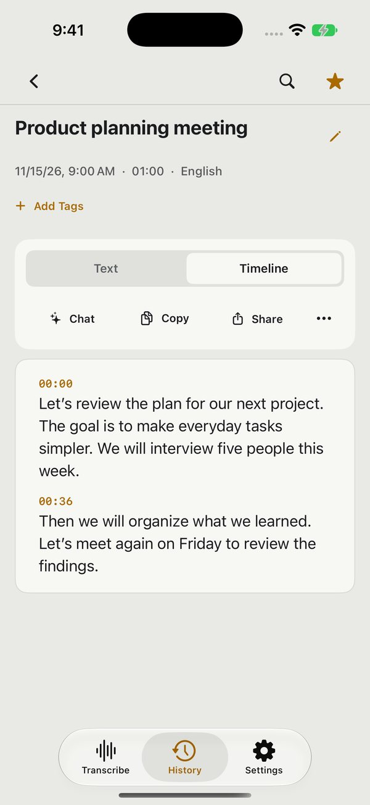

உங்கள் குரல்,இப்போது நேரடி உரையாக.
கூட்டம், விரிவுரை அல்லது நேர்காணலைப் பதிவு செய்யுங்கள் — அல்லது ஆடியோ அல்லது வீடியோ கோப்பை இறக்குமதி செய்யுங்கள் — உங்கள் iPhone அல்லது iPad-இலேயே டிரான்ஸ்கிரிப்டைப் பெறுங்கள்.
ஆதரிக்கப்படும் iOS 26+ சாதனங்களில் பதிவு செய்யும்போது நேரடி டிரான்ஸ்கிரிப்ஷன். iOS 26+-இல் Apple Intelligence இயக்கப்பட்டிருந்தால், டிரான்ஸ்கிரிப்ட் அரட்டையில் AI சுருக்கத்தைக் கேட்கலாம்.
- அனைத்து அம்சங்களும் இலவசம்
- விளம்பரங்கள் இல்லை
- இன்-ஆப் கொள்முதல் இல்லை
- கணக்கு இல்லை
- iPhone & iPad
ஒவ்வொரு அம்சமும், இலவசம்.
கட்டணத் திட்டம் எதுவும் இல்லை. இந்தப் பக்கத்தில் பட்டியலிடப்பட்டுள்ள அனைத்தும் — ஒலிப்பதிவு, கோப்பு இறக்குமதி, அனைத்து Whisper மாதிரிகள், ஏற்றுமதி, வரலாறு, குறிச்சொற்கள், Apple Intelligence அரட்டை மற்றும் Shortcuts — எந்தக் கட்டணமும் இன்றி கிடைக்கின்றன. கணக்கை உருவாக்கத் தேவையில்லை, ஆப்பும் விளம்பரங்களைக் காட்டுவதில்லை.
- சந்தா அல்லது ஒரு முறை கொள்முதல் இல்லை
- இன்-ஆப் கொள்முதல் அல்லது பூட்டப்பட்ட அம்சங்கள் இல்லை
- விளம்பரங்கள் மற்றும் மூன்றாம் தரப்பு கண்காணிப்பு இல்லை
- பதிவு அல்லது உள்நுழைவு இல்லை
- பதிவின் நீளம் அல்லது கோப்புகளின் எண்ணிக்கையில் ஆப் வரம்பு இல்லை — சாதன சேமிப்பு, நினைவகம் மற்றும் பேட்டரி கட்டுப்பாடுகள் பொருந்தும்
ஆடியோவிலிருந்து டிரான்ஸ்கிரிப்டுக்கு
பதிவு செய்யுங்கள் அல்லது இறக்குமதி செய்யுங்கள்
மைக்ரோஃபோனில் பதிவு செய்யத் தட்டவும், அல்லது Files அல்லது Photos-இலிருந்து ஆடியோ அல்லது வீடியோ கோப்பைத் தேர்ந்தெடுக்கவும். பதிவு செய்யும்போது இடைநிறுத்தி (pause) மீண்டும் தொடங்கலாம் (resume).
படியுங்கள், திருத்துங்கள், ஏற்றுமதி செய்யுங்கள்
நேர முத்திரைகளுடன் உரையை மதிப்பாய்வு செய்யுங்கள், பிழைகளைச் சரிசெய்யுங்கள், பின்னர் TXT, CSV, JSON அல்லது SRT சப்டைட்டில்களாகப் பகிருங்கள்.
இதைக் கொண்டு என்ன செய்யலாம்
ஆப்பின் முக்கிய பகுதிகளை நெருக்கமாகப் பார்க்கலாம்.

பதிவு செய்யுங்கள் அல்லது உங்கள் கோப்புகளைக் கொண்டு வாருங்கள்
ஒரே தட்டில் பதிவைத் தொடங்குங்கள், அல்லது ஏற்கனவே உள்ள கோப்பை இறக்குமதி செய்யுங்கள். ஆப் ஆடியோவை மாற்றி சாதனத்திலேயே டிரான்ஸ்கிரைப் செய்கிறது.
- இடைநிறுத்தல் மற்றும் மீண்டும் தொடங்கலுடன் மைக்ரோஃபோன் பதிவு, மற்றும் வெளிப்புற மைக்குகளுக்கான மைக்ரோஃபோன் மாற்றி
- ஆதரிக்கப்படும் iPhone-களில் Live Activity மூலம் பூட்டுத் திரை மற்றும் Dynamic Island-இல் பதிவு நிலை
- Files ஆப்பிலிருந்து M4A, WAV, MP3, MP4 மற்றும் MOV போன்ற ஆடியோ மற்றும் வீடியோவை இறக்குமதி செய்யுங்கள்
- உங்கள் Photos நூலகத்திலிருந்து நேரடியாக வீடியோவைத் தேர்ந்தெடுக்கவும்
- நீண்ட அமர்வுகளுக்கான விருப்ப "Keep Screen On"

Whisper, உங்கள் சாதனத்தில் இயங்குகிறது
ஆப் OpenAI-இன் திறந்த Whisper மாதிரிகளை whisper.cpp மூலம் பயன்படுத்துகிறது, மேலும் கிடைக்கும் இடங்களில் Metal GPU வேகமாக்கலுடன் இயங்குகிறது. வேறு மாதிரியைத் தேர்ந்தெடுத்து வேகத்திற்கும் துல்லியத்திற்கும் இடையே சமநிலைப்படுத்தலாம்.
- 10 Whisper மாதிரிகள், Tiny (சுமார் 15 MB) முதல் Large v3 Turbo மற்றும் Medium (சுமார் 1.5 GB வரை)
- தானியங்கு மொழி கண்டறிதல், அல்லது 18 மொழிகளில் தேர்வு செய்யுங்கள்
- முடிவின் விருப்ப ஆங்கில மொழிபெயர்ப்பு
- ஆதரிக்கப்படும் சாதனங்களில் செயலாக்கத்தை விரைவுபடுத்தக்கூடிய விருப்ப Core ML என்கோடர் பதிவிறக்கம்
- iOS 26 அல்லது அதற்குப் பிந்தைய பதிப்புகளில், Apple-இன் ஆன்-டிவைஸ் பேச்சு இயந்திரமும் மாற்றாகக் கிடைக்கிறது

நேரக் கோடு அல்லது வாசிப்பு காட்சி
தெளிவான உரைக் காட்சிக்கும் நேர முத்திரைகளுடன் கூடிய நேரக் கோடு காட்சிக்கும் இடையே மாறுங்கள். என்ன பேசப்பட்டது என்பதைச் சரிபார்க்க அசல் ஆடியோவை இயக்குங்கள், தேவைப்பட்டால் உரையைத் திருத்துங்கள்.
- உரை மற்றும் நேரக் கோடு காட்சிகள், விருப்ப நேர முத்திரைகளுடன்
- வேகத்தையும் நிலையையும் சரிசெய்யக்கூடிய ஆடியோ பிளேபேக்
- டிரான்ஸ்கிரிப்ட் உரை மற்றும் அதன் தலைப்பைத் திருத்துங்கள்
- ஒரு பத்தி அல்லது முழு உரையையும் நகலெடுக்கவும்
- டிரான்ஸ்கிரிப்டினுள் தேடுங்கள்

தேடக்கூடிய வரலாறு
ஒவ்வொரு டிரான்ஸ்கிரிப்டும் உங்கள் சாதனத்தில் சேமிக்கப்படுவதால், பின்னர் எப்போது வேண்டுமானாலும் மீண்டும் பார்க்கலாம்.
- தலைப்பு, உரை அல்லது குறிச்சொல்லால் தேடுங்கள்
- பிடித்தவை மற்றும் வரிசைப்படுத்தல்
- அனைத்து டிரான்ஸ்கிரிப்டுகளிலும் சேர்க்க, மறுபெயரிட, இணைக்க மற்றும் நீக்கக்கூடிய குறிச்சொற்கள்
- குறிச்சொல்லால் வரலாற்றை வடிகட்டுங்கள்

உரை, தரவு அல்லது சப்டைட்டில்கள்
அடுத்த படிக்கு ஏற்ற வடிவத்தில் டிரான்ஸ்கிரிப்டைப் பகிருங்கள் — குறிப்புகள், விரிதாள், ஸ்கிரிப்ட் அல்லது வீடியோ எடிட்டர்.
- குறிப்புகள் மற்றும் ஆவணங்களுக்கான TXT
- விரிதாள்களுக்கான CSV
- உங்கள் சொந்த கருவிகளுக்கான பிரிவுகளுடன் JSON
- வீடியோ எடிட்டிங்கிற்கு SRT சப்டைட்டில்கள்
- அசல் பதிவை ஆடியோ கோப்பாகப் பகிருங்கள்
டிரான்ஸ்கிரிப்டைப் பற்றிக் கேளுங்கள் iOS 26+
Apple Intelligence ஆதரிக்கும் சாதனங்களில், டிரான்ஸ்கிரிப்டுடன் அரட்டையிடலாம் — சுருக்கம், முக்கிய முடிவுகள் அல்லது செயல் உருப்படிகளைக் கேளுங்கள் — மற்றும் தலைப்பை உருவாக்குங்கள். அரட்டைகள் ஒவ்வொரு டிரான்ஸ்கிரிப்டுக்கும் சேமிக்கப்படும். நீண்ட டிரான்ஸ்கிரிப்டுகள் பிரிவுகளாகப் படிக்கப்படும். விருப்ப Private Cloud Compute முறை (iOS 27 அல்லது பின்) இயல்பாக அணைந்திருக்கும்.
Shortcuts & Siri
App Shortcuts ஐப் பயன்படுத்தி பதிவைத் தொடங்கவோ நிறுத்தவோ, மீடியா கோப்பை டிரான்ஸ்கிரைப் செய்யவோ, டிரான்ஸ்கிரிப்ஷன்களைத் தேடவோ, டிரான்ஸ்கிரிப்டின் உரையைப் பெறவோ, அல்லது குறிச்சொற்கள் மற்றும் பிடித்தவற்றைச் சேர்க்கவோ முடியும் — தானியங்குபடுத்தலுக்கு மிகவும் பயனுள்ளது. சில செயல்களுக்கு புதிய iOS பதிப்பு தேவை.
அனைத்து அம்சங்கள் — அனைத்தும் இலவசம்
ஆப் தற்போது வழங்கும் அனைத்தின் முழுப் பட்டியல். இங்குள்ள எதற்கும் கட்டணம் செலுத்தத் தேவையில்லை.
பதிவு செய்தல்
- மைக்ரோஃபோன் பதிவுஇலவசம்
- பதிவை இடைநிறுத்தி மீண்டும் தொடங்குதல்அழைப்புகள் போன்ற இடையூறுகளையும் பதிவு கையாள்கிறதுஇலவசம்
- மைக்ரோஃபோனை மாற்றுதல்இலவசம்
- பதிவு செய்யும்போது Live Activityபூட்டுத் திரை மற்றும் Dynamic Islandஇலவசம்
- ஆடியோ கோப்புகளை இறக்குமதி செய்தல்M4A, WAV, MP3 மற்றும் பிற பொதுவான வடிவங்கள்இலவசம்
- வீடியோ கோப்புகளை இறக்குமதி செய்தல்MP4, MOV மற்றும் பிற பொதுவான வடிவங்கள்இலவசம்
- Photos-இலிருந்து வீடியோ இறக்குமதி செய்தல்இலவசம்
- Live Transcribeபேசும்போதே உரை தோன்றும் · iOS 26+இலவசம்
பேச்சு அறிதல்
- சாதனத்திலேயே Whisper (whisper.cpp)இலவசம்
- அனைத்து 10 Whisper மாதிரிகளும்Tiny, Base, Small, Medium, Large v3 Turbo மற்றும் காம்பாக்ட் வகைகள்இலவசம்
- Apple ஆன்-டிவைஸ் பேச்சு இயந்திரம்iOS 26+, மொழிகள் iOS ஆல் நிர்வகிக்கப்படுகின்றனஇலவசம்
- தானியங்கு-கண்டறிதல் அல்லது 18 மொழிகளில் தேர்வுஇலவசம்
- ஆங்கிலத்திற்கு மொழிபெயர்இலவசம்
- Metal GPU வேகமாக்கல்சாதனம் ஆதரிக்கும்போதுஇலவசம்
- Core ML என்கோடர் (விருப்ப பதிவிறக்கம்)இலவசம்
துல்லியம் & செயல்திறன் கருவிகள்
- அமைதியான பிரிவுகளைத் தவிர்த்தல்குரல் செயல்பாடு கண்டறிதல் (VAD)இலவசம்
- ஆடியோவைச் சுத்தம் செய்தல்சத்தம் குறைப்பு மற்றும் ஒலி அளவு சமன்படுத்தல்இலவசம்
- சொற்களஞ்சிய குறிப்புகள்பெயர்கள் மற்றும் மாதிரி எதிர்பார்க்க வேண்டிய சொற்கள்இலவசம்
- Flash Attentionநினைவக பயன்பாட்டைக் குறைத்து செயலாக்கத்தை விரைவுபடுத்தலாம்இலவசம்
- நேர முத்திரைகளைச் சேர்த்தல்இலவசம்
படித்தல் & திருத்தம்
- உரை காட்சி மற்றும் நேரக் கோடு காட்சிஇலவசம்
- வேகக் கட்டுப்பாட்டுடன் ஆடியோ பிளேபேக்இலவசம்
- டிரான்ஸ்கிரிப்ட் உரை மற்றும் தலைப்பைத் திருத்துதல்இலவசம்
- பத்தி அல்லது முழு உரையை நகலெடுத்தல்இலவசம்
- டிரான்ஸ்கிரிப்டினுள் தேடுதல்இலவசம்
வரலாறு & ஒழுங்கமைப்பு
- சேமித்த டிரான்ஸ்கிரிப்ஷன் வரலாறுஇலவசம்
- தலைப்பு, உரை அல்லது குறிச்சொல்லால் தேடுதல்இலவசம்
- பிடித்தவை மற்றும் வரிசைப்படுத்தல்இலவசம்
- குறிச்சொற்கள்: சேர்த்தல், மறுபெயரிடுதல், இணைத்தல், நீக்குதல்இலவசம்
- குறிச்சொல்லால் வடிகட்டுதல்இலவசம்
ஏற்றுமதி & பகிர்வு
- உரை (.txt)இலவசம்
- CSV (.csv)இலவசம்
- JSON (.json)இலவசம்
- சப்டைட்டில்கள் (.srt)இலவசம்
- அசல் ஆடியோவைப் பகிர்தல்இலவசம்
- பகிர்வுத் தாள் மூலம் உரையைப் பகிர்தல்இலவசம்
Apple Intelligence
- டிரான்ஸ்கிரிப்டைப் பற்றி அரட்டையிடுதல்ஆதரிக்கப்படும் சாதனங்களில் iOS 26+இலவசம்
- ஒவ்வொரு டிரான்ஸ்கிரிப்டுக்கும் சேமித்த அரட்டை வரலாறுஇலவசம்
- தலைப்பை உருவாக்குதல்இலவசம்
- Private Cloud Compute முறைவிருப்பம் · iOS 27+ · இயல்பாக அணைவுஇலவசம்
தானியங்குபடுத்தல் & ஆப்
- Shortcuts & Siri செயல்கள்இலவசம்
- iPhone மற்றும் iPad தளவமைப்புகள்இலவசம்
- ஒளி, இருள் அல்லது கணினி தோற்றம்இலவசம்
- 11 மொழிகளில் இடைமுகம்இலவசம்
- மாதிரி மற்றும் சேமிப்பு மேலாண்மைஇலவசம்
iOS பதிப்பு குறிப்பிடப்பட்ட அம்சங்களுக்கு அந்தப் பதிப்பு அல்லது அதற்குப் பிந்தைய பதிப்பு தேவை. Apple Intelligence அம்சங்கள் சாதன ஆதரவு, பிராந்தியம் மற்றும் மொழி அமைப்புகளையும் பொறுத்தது.
உங்கள் ஆடியோவை உங்கள் சாதனத்திலேயே வைத்திருக்க வடிவமைக்கப்பட்டது
Whisper டிரான்ஸ்கிரிப்ஷன் உள்ளூரிலேயே இயங்குகிறது. ஆப்பில் விளம்பரங்கள், பகுப்பாய்வு SDKகள் அல்லது மூன்றாம் தரப்பு கண்காணிப்பு இல்லை, மேலும் உங்கள் ஆடியோவையோ டிரான்ஸ்கிரிப்டுகளையோ டெவலப்பருக்கு அனுப்பாது.
உங்கள் சாதனத்தில் இருக்கும்
பதிவுகள், இறக்குமதி செய்யப்பட்ட ஊடகம், டிரான்ஸ்கிரிப்டுகள், குறிச்சொற்கள், அரட்டைகள் மற்றும் அமைப்புகள் உங்கள் சாதனத்திலுள்ள ஆப்பில் சேமிக்கப்படுகின்றன. அவற்றை ஆப்பில் எப்போது வேண்டுமானாலும் நீக்கலாம்.
ஆப் எப்போது இணைகிறது
Hugging Face-இலிருந்து Whisper, VAD மற்றும் Core ML மாதிரி கோப்புகளைப் பதிவிறக்க; App Store-இல் புதிய பதிப்பைச் சரிபார்க்க; மற்றும் Apple-இன் இயந்திரத்திற்காக iOS பேச்சு மாதிரிகளைப் பதிவிறக்கும்போது.
உங்கள் விருப்பம்
Apple Intelligence-க்கான Private Cloud Compute இயல்பாக அணைந்திருக்கும். அதை இயக்கினால், டிரான்ஸ்கிரிப்ட் உரை மற்றும் உங்கள் கேள்வி Apple-இன் Private Cloud Compute மூலம் செயலாக்கப்படும். ஏற்றுமதியைப் பகிர்வது நீங்கள் தேர்ந்தெடுக்கும் இடத்திற்குச் செல்லும்.
தொடங்குவதற்கு முன்
சாதனம் & அமைப்பு
iOS / iPadOS 17.0 அல்லது அதற்குப் பிந்தைய பதிப்பு கொண்ட iPhone அல்லது iPad. Live Transcribe, Apple-இன் பேச்சு இயந்திரம் மற்றும் ஆன்-டிவைஸ் Apple Intelligence-க்கு iOS 26 அல்லது அதற்குப் பிந்தைய பதிப்பு தேவை; Private Cloud Compute-க்கு iOS 27 அல்லது அதற்குப் பிந்தைய பதிப்பு தேவை.
சேமிப்பு & நெட்வொர்க்
மாதிரியைப் பதிவிறக்க இணைய இணைப்பும் காலி சேமிப்பும் தேவை (மாதிரியைப் பொறுத்து சுமார் 15 MB முதல் 1.5 GB வரை). பதிவுக்கு மைக்ரோஃபோன் அனுமதி தேவை.
அடிக்கடி கேட்கப்படும் கேள்விகள்
இந்த ஆப் உண்மையில் இலவசமா?
ஆம். தற்போது ஒவ்வொரு அம்சத்தையும் இலவசமாகப் பயன்படுத்தலாம். விளம்பரங்கள், இன்-ஆப் கொள்முதல், சந்தாக்கள் அல்லது கணக்கு பதிவு இல்லை.
இது ஆஃப்லைனில் வேலை செய்யுமா?
Whisper டிரான்ஸ்கிரிப்ஷன் உங்கள் சாதனத்திலேயே இயங்குமாறு வடிவமைக்கப்பட்டுள்ளது. மாதிரியைப் பதிவிறக்க ஒரு முறை இணைய இணைப்பு தேவை; அதற்குப் பிறகு அந்த மாதிரியைக் கொண்டு பதிவு மற்றும் டிரான்ஸ்கிரிப்ஷன் பொதுவாக இணைப்பின்றி செய்யலாம். மற்ற மாதிரிகளைப் பதிவிறக்க, புதுப்பிப்புகளைச் சரிபார்க்க மற்றும் விருப்ப Private Cloud Compute முறைக்கு இணைப்பு தேவை.
எனது ஆடியோ சர்வருக்கு அனுப்பப்படுமா?
Whisper டிரான்ஸ்கிரிப்ஷன் உள்ளூரிலேயே இயங்குகிறது, ஆப் உங்கள் ஆடியோவையோ டிரான்ஸ்கிரிப்டுகளையோ டெவலப்பருக்கு அனுப்பாது. உங்கள் கட்டுப்பாட்டில் உள்ள ஒரே விதிவிலக்கு Apple Intelligence அரட்டைக்கான விருப்ப Private Cloud Compute முறை மட்டுமே — இது டிரான்ஸ்கிரிப்ட் உரை மற்றும் உங்கள் கேள்வியை Apple-இன் Private Cloud Compute-க்கு அனுப்புகிறது. இது இயல்பாக அணைந்திருக்கும்.
எந்தக் கோப்புகளை இறக்குமதி மற்றும் ஏற்றுமதி செய்யலாம்?
Files-இலிருந்து M4A, WAV, MP3, MP4 மற்றும் MOV போன்ற பொதுவான ஆடியோ மற்றும் வீடியோ வடிவங்களையும், Photos-இலிருந்து வீடியோக்களையும் இறக்குமதி செய்யலாம். டிரான்ஸ்கிரிப்டுகள் TXT, CSV, JSON அல்லது SRT ஆக ஏற்றுமதி செய்யப்படலாம், பதிவுகளை ஆடியோ கோப்புகளாகப் பகிரலாம்.
எந்த மொழிகள் ஆதரிக்கப்படுகின்றன?
டிரான்ஸ்கிரிப்ஷனுக்குத் தானியங்கு கண்டறிதலைப் பயன்படுத்தலாம் அல்லது ஆங்கிலம், ஜப்பானியம், சீனம், கொரியன், ஸ்பானிஷ், பிரெஞ்சு, ஜெர்மன், இத்தாலியன், போர்த்துகீசியம், ரஷ்யன், அரபிக், இந்தி, டச்சு, போலிஷ், துருக்கிஷ், வியட்நாமீஸ், தாய் அல்லது இந்தோனேசியன் ஆகியவற்றிலிருந்து தேர்வு செய்யலாம். முடிவுகள் மொழியைப் பொறுத்து மாறுபடலாம். ஆப்பின் இடைமுகம் 11 மொழிகளில் கிடைக்கிறது.
வீடியோவிற்கு சப்டைட்டில்களை உருவாக்க முடியுமா?
ஆம். வீடியோவை இறக்குமதி செய்யுங்கள், டிரான்ஸ்கிரைப் செய்யுங்கள், பின்னர் SRT ஆக ஏற்றுமதி செய்யுங்கள். பெரும்பாலான வீடியோ எடிட்டர்கள் SRT கோப்புகளை இறக்குமதி செய்ய முடியும். சப்டைட்டில்களின் நேரம் அடையாளம் காணப்பட்ட பிரிவுகளைப் பின்பற்றும், எனவே உங்கள் எடிட்டரில் அதைச் சரிசெய்து கொள்ளலாம்.
பதிவு எவ்வளவு நீளமாக இருக்கலாம்?
ஆப் நிலையான வரம்பை அமைக்கவில்லை. நடைமுறையில், மிக நீளமான ஆடியோ உங்கள் சாதனத்தின் காலி சேமிப்பு, நினைவகம் மற்றும் பேட்டரியைப் பொறுத்தது, மேலும் பெரிய மாதிரிகளுக்கு அதிக நேரம் ஆகும். நீளமான கோப்பு தோல்வியடைந்தால், சிறிய மாதிரி அல்லது Flash Attention உதவலாம்.
இது OpenAI-யின் அதிகாரப்பூர்வ ஆப்பா?
இல்லை. இது ஓப்பன்-சோர்ஸ் whisper.cpp திட்டம் மூலம் OpenAI-யின் திறந்த Whisper மாதிரிகளை இயக்கும் சுயாதீன ஆப். OpenAI உடன் இதற்கு எந்தத் தொடர்பும் அல்லது அங்கீகாரமும் இல்லை.